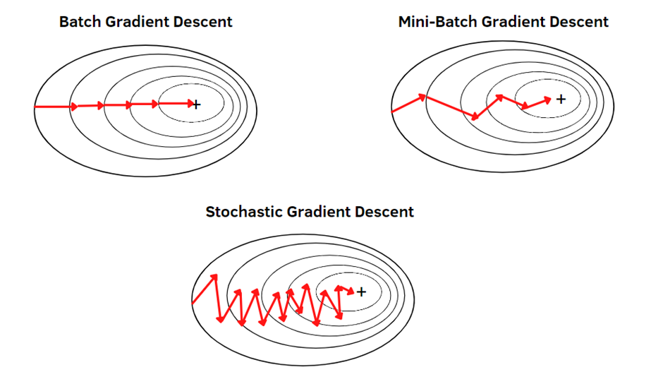
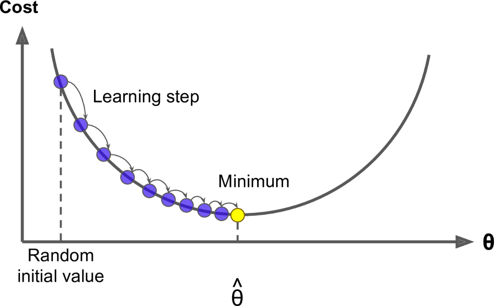

Optimisation Algorithm: Gradient Descent
In the previous section, we have seen that we can write the linear regression problem in the form of
minimising the cost function. So, the problem reduces to finding the minimum of the cost function. So,
we need to find the parameters $W$ such that the cost function is minimised.
Forget about mathematical or theoretical ways. The question is how do you computationally (iteratively)
find the minima in general. Why iteratively? Well because, in this case of linear
regression, we have a function which can be solved into a closed form. But that is not the case
always.
So let's dive into the first and most fundamental optimisation algorithm, i.e.,
Gradient
Descent.
Begining with an Example: Gradient Descent
As the name suggested, the idea of this algorithm is to leverage gradient of the loss
function to find the optima. Let's dive into an intuitive simple case to grasp the overall concept.
Consider in our regression case, we just have one weight value. Hence, the complex multi-dimensional
hyperplane of loss function now essentially lands on the Cartesian plane. And since we
know the MSE loss function is convex, it looks like a parabola (bowl
shaped).
[Note: Often we use RMSE instead of MSE. But the shape remains the same. The 'R' in
RMSE stands
for 'Root'. So, we just take square root of MSE, it is good for scaling.]
Now consider mimicking the example, we find a loss function curve just like this. We are standing in the
point $(x_1, y_1)$. And we calculated the gradient of the function at that
point, which turns out to be $m$ (let's say). Our genuine curiosity makes us wonder
what does this gradient geometrically represent?
Considering the picture above, the gradient represents nothing but slope the curvature at that point and
more importantly, if the gradient is positive, it means the function is increasing at that
point and vice versa.
What Gradient Descent tells us, is to take a step forward if the function is decreasing,
evidently that will take us closer to the minima and vice versa.
The Algorithm
After enough trash talk, I'm guessing we are ready to get
real!
The step by step algorithm:
- Let's use some search algorithm that starts with an initial guess.
- Our goal is to find a $w^*$ which points to the minima in the loss function plane.
- If we starts with $w_0$, the loss function is $L(w)$.
- Gradient of the function at this point is- $$\frac{\partial L(w)}{\partial w_0}$$
- We want to move downhill to minima. So, move opposite of gradient. (here $j$ represents $j^{th}$ dimension of weight). $$w^{(j)} = w^{(j)} - \eta \frac{\partial}{\partial w^{(j)}}L(w)$$
- This update rule is followed every iteration to reach the minima. And $\eta$ here is the learning rate (a Hyperparameter).
So, in simple words, we start at a random point, check gradient to find out which part of the curve we are and take a step towards minima. Something like this.
The Update Rule
Now, let's talk maths. In terms of linear regression loss function, we can deduce the update rule as follows.
Convergence Conditions
The way we look at typical convergence cases are like this.
Batch Gradient Descent
In Batch Gradient Descent, we calculate the gradient of the loss function with respect to the weights
using whole dataset. By grouping the updates of the coordinates into an update vector. we can
write,
$$
w = w + \eta \sum_{i=1}^{n} \big(y_i - E(w, x_i)\big) \cdot x_i
$$
This is called Batch Gradient Descent. The Optimization problem we have for linear
regression, always converges to global minima as it is convex.
Instead of $n$ if we group through another parameter $B$ like this, the data points are divided into
batches of $B$.
$$
w = w + \eta \sum_{i=1}^{B} \big(y_i - E(w, x_i)\big) \cdot x_i
$$
It is called Mini Batch Gradient Descent and $B$ is a Hyperparameter.
Stochastic Gradient Descent
If we update the weight according to loss in each training example, it's called Stochastic
Gradient Descent.
$$w = w + \eta \big(y_i - E(w, x_i)\big) \cdot x_i$$
- Computational Efficiency: Computing the gradient using the entire dataset can be computationally expensive, especially for large datasets. SGD allows for more frequent updates with lower computational cost.
- Memory Efficiency: SGD requires less memory as it only needs to store the current training example and its gradient.
- Faster Convergence: SGD can converge faster than batch GD for large datasets.
- Simpler Implementation: SGD is simpler to implement than batch GD.
- Online Learning: SGD can be used for online learning, where the model is updated as new data arrives.
- Better for Non-Convex Functions: SGD can escape local minima in non-convex functions.
- Less Prone to Local Minima: SGD's noisy updates can help it escape local minima.
- Problem: Computationally Expensive: Computing the gradient using the entire dataset can be computationally expensive, especially for large datasets. SGD allows for more frequent updates with lower computational cost.
The contour plot in Stochastic GD looks like zigzag. Because, we are updating the weights according to loss in each training example.

Gradient Descent in Code
The best way to learn the tricks is to build from scratch. So, here is the script for that.
import numpy as np
from sklearn.metrics import mean_squared_error
# ── Gradient Descent from scratch (but using NumPy) ────────────────────────
def gradient_descent(X, y, lr=0.01, epochs=1000):
n = len(y)
# Initialize weights and bias to zero
w = np.zeros((X.shape[1], 1))
b = 0.0
loss_history = []
for epoch in range(epochs):
# Forward pass — predictions
y_pred = X @ w + b # shape (n, 1)
# Compute MSE loss
loss = mean_squared_error(y, y_pred)
loss_history.append(loss)
# Compute gradients
dw = (1 / n) * X.T @ (y_pred - y) # ∂L/∂w
db = (1 / n) * np.sum(y_pred - y) # ∂L/∂b
# Update parameters
w -= lr * dw
b -= lr * db
if epoch % 100 == 0:
print(f"Epoch {epoch:>4} | Loss: {loss:.4f}")
return w, b, loss_history
w, b, loss_history = gradient_descent(X, y, lr=0.1, epochs=500)
- Learning Rate: $lr$, The learning rate is a hyperparameter that determines the step size of the gradient descent algorithm.
- Epochs: The number of epochs is the number of times the gradient descent algorithm is run.
- Loss: The loss is the mean squared error between the predicted values and the actual values.
- Gradient: The gradient is the partial derivative of the loss function with respect to the weights and bias.
- Update: The weights and bias are updated by subtracting the gradient multiplied by the learning rate.
But, we can do better. We can use PyTorch to do the same thing. It is one of the most advanced libraries that is used in even building agents and llms.
# ── Same thing in 3 lines using PyTorch ───────────────────────────────────
import torch
import torch.nn as nn
X_t = torch.tensor(X, dtype=torch.float32)
y_t = torch.tensor(y, dtype=torch.float32)
model = nn.Linear(1, 1)
optimizer = torch.optim.SGD(model.parameters(), lr=0.1)
criterion = nn.MSELoss()
torch_losses = []
for epoch in range(500):
optimizer.zero_grad()
loss = criterion(model(X_t), y_t)
loss.backward() # computes all gradients automatically
optimizer.step() # w = w - lr * grad
torch_losses.append(loss.item())
More Optimisation: RMSProp
RMSProp (Root Mean Square Propagation) is another optimisation algorithm that is used to optimise the weights and bias of a model. It is designed to address some of the limitations of gradient descent, especially the problem of vanishing gradients, non-convex functions. It is a modification of gradient descent that uses a moving average of the squared gradients to scale the learning rate.
Update Rule
In each step, we calculate the gradient as usual $(\nabla_wJ(w))$, but don't update the weights directly. Instead, we update the weights by subtracting the gradient multiplied by the learning rate. But, we don't use the same learning rate for all the weights. We use a different learning rate for each weight.

But it is not the only such modification.
Adam: Adaptive Moment Estimation
It combines ideas from both momentum optimization and RMSprop. Adam adapts the learning rates for each parameter individually based on the historical gradients of those parameters.
How it Works?
Similar to RMSProp, we calculate moments here but not just one. We have two moments. Our first moment is $m_t$ and the second moment is $v_t$. We see that, first moment is a decaying average of gradients and the second moment is a decaying average of squared gradients. $$ m_t = \beta_1 m_{t-1} + (1-\beta_1)\nabla_w J(w) \\ v_t = \beta_2 v_{t-1} + (1-\beta_2)\nabla_w J(w)^2 $$ Now the update rule stands as, $$ w_{t+1} = w_t - \frac{\eta}{\sqrt{v_t} + \epsilon} m_t $$ In pratice, both of them suffice the same goal just one is more advanced than the other. We will see the practical usecase of them soon.
References & Further Reading
- Theoretical Explanation: CMU Notes
- A little hands on: coding-blocks
- RMSProp, Adam ++ TDS